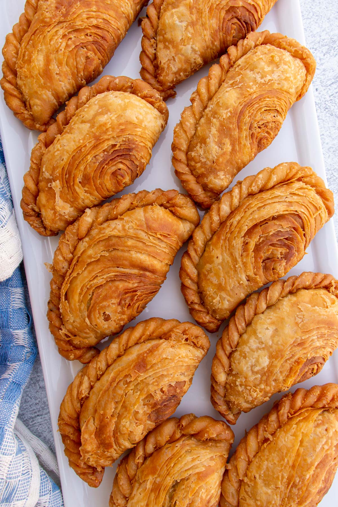

Curry Puff Recipe

Description
This recipe for curry puffs makes oven-baked beauties that are great as appetizers or a snack.
They're spicy and savory, with a subtle coconut milk base.
In Malaysia, they are traditionally deep-fried.
But here's a modern version. You can wrap them in different ways — as rolls, sealed
pockets, or semi-open bundles.
Ingredients
- 1 tablespoon vegetable oil
- ½ teaspoon ground coriander
- ½ teaspoon ground turmeric
- ½ teaspoon ground cumin
- 2 teaspoons curry powder
- ½ cup coconut milk, or more as needed
- 2 red onions, chopped
- 1 stalk lemon grass, thinly sliced
- 1 red chile pepper, roughly chopped
- 1 large russet potato, diced
- ¾ pound skinless, boneless chicken breast, cut in bite-sized pieces
- 1 teaspoon salt
- 1 (17.25 ounce) package frozen puff pastry, thawed
Steps
- Heat vegetable oil in a saucepan over medium-low heat. Stir in coriander, turmeric, cumin, and curry powder.
Cook a few seconds until fragrant. Pour in coconut milk, onions, lemon grass, and red pepper; cook until vegetables
are tender, about 7 minutes. Stir in potato and continue cooking for 12 minutes, adding more coconut milk if the mixture becomes too dry.
Stir in chicken, then season with salt. Cook and stir until chicken and potato have absorbed most of the liquid, then spread the mixture onto a plate to cool.
- Preheat the oven to 375 degrees F (190 degrees C). Line 2 baking sheets with parchment paper.
- Unfold puff pastry and cut each sheet into 9 squares. Place heaping spoonfuls of the filling in the center of each square. Gather all 4 corners of the pastry and pinch together at the top, forming a small pouch. Place each pastry on the baking sheet, about 1 inch apart.
- Bake in the preheated oven until golden brown, 22 to 27 minutes. Cool on the baking sheet for 10 minutes before removing to cool on a wire rack. Serve warm or at room temperature.
Back to home